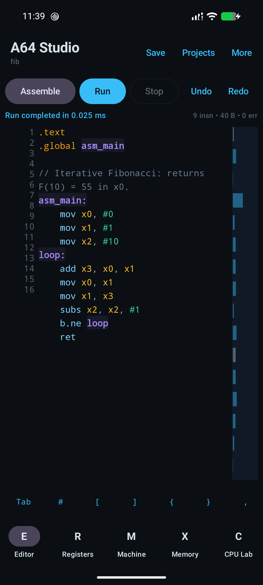
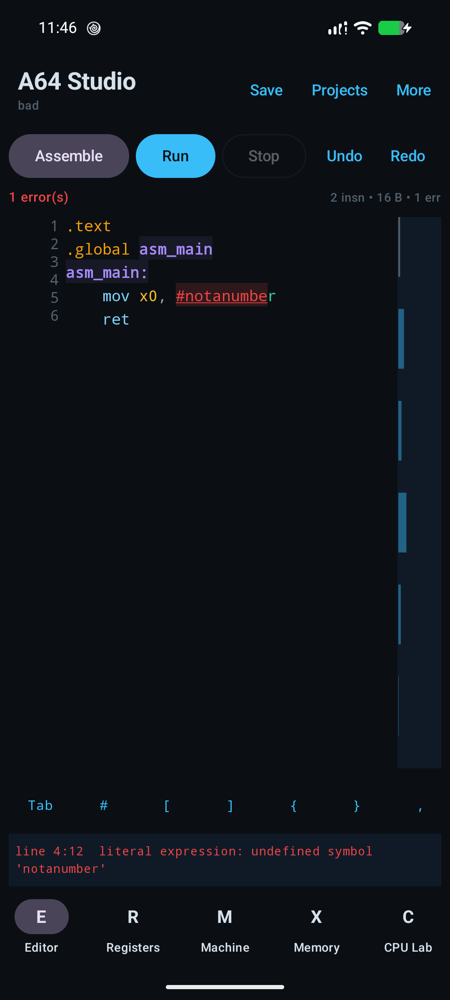

An editor made for assembly
Syntax highlighting, diagnostics with line and column, labels, autocomplete, signature hints, find and replace, undo/redo, folding, minimap and a compact symbol key row.
JETPACK COMPOSE · PRIVATE .S PROJECTSVERSION 0.1.0 / EARLY RELEASE
A64 Studio is an offline Android workbench for small AArch64
programs: write .s, assemble, run on compatible
hardware, then inspect what changed.
The GitHub APK is signed with a local development key. F-Droid builds use F-Droid’s signing key; check the project’s release notes before changing install sources.

Project verification capture; the displayed run duration is device-specific.
270verified instruction encodings
1focused assembly workbench
0internet permission in the app
Early 0.1.0 release.
Designed for learning and small experiments.
01 / The workbench
Write a leaf program, watch the assembler explain it, and inspect the machine state after it returns. The product is deliberately smaller than a full Linux toolchain.
Syntax highlighting, diagnostics with line and column, labels, autocomplete, signature hints, find and replace, undo/redo, folding, minimap and a compact symbol key row.
JETPACK COMPOSE · PRIVATE .S PROJECTSTwo-pass assembly, labels, selected data directives, relocations, disassembly and source-to-byte mapping. Unsupported forms produce diagnostics.
270 FORMS · LLVM CROSS-CHECKEDOn a compatible device, the app runs the assembled code natively in a separate worker process with a watchdog. The app does not emulate another CPU.
ARM64 ANDROID · LEAF PROGRAMSReview x0–x30, SP, NZCV, encoded bytes, disassembly, source mappings and a bounded memory image after the program returns.
POST-RUN STATE · NOT A LIVE DEBUGGER
Save plain .s files in app storage, import UTF-8
source through Android’s document picker, or open bundled examples
for integers, memory, NEON and floating point.
The worker has the same Android UID and app sandbox as the editor. The watchdog can end a hung process; it does not make untrusted assembly safe. Run only code you have reviewed and understand.
Read the execution and security limits02 / Under the editor
Kotlin owns the Android interface and lifecycle. Rust handles parsing and native code paths. Messenger IPC returns run results to the editor.
Works without a native ARM64 device? The editor, assembler and offline inspection tools still open on other Android ABIs, but native execution reports that ARM64 is unavailable. The app does not switch to emulation.
03 / Beginner walkthrough
Run the bundled Fibonacci example and inspect F(10). For this tutorial’s native run, use an ARM64 Android device running API 26 or later.
Download A64 Studio 0.1.0 from the GitHub release. Android 8.0 (API 26) is the minimum; an ARM64 device is required for native execution.
In the app, open Projects and choose
fib.s. The file defines asm_main,
calculates F(10), and returns through ret.
Tap Assemble to check the source. When it succeeds, tap Run. The program has no Linux syscalls, output stream or external dependencies.
Open Registers. The recorded example returns
x0 = 0x37 (55) and x1 = 0x59 (89).
Those values are the program’s result, not a performance claim.

04 / Builder notes
A source-based reference for the assembler, the runtime boundary, development requirements and known gaps.
Android SDK platform 36, NDK 28.2.13676358, JDK 17+,
Rust 1.82+ and the Android Rust target are listed by the project.
Native packaging is restricted to arm64-v8a.
rustup target add aarch64-linux-android
./gradlew :app:assembleDebugThe documented debug build command; it cross-compiles the Rust core and packages the app.
Source programs provide asm_main and should return
with ret. The app captures general-purpose registers,
SP and NZCV after the worker returns.
.text
.global asm_main
asm_main:
mov x0, #42
retMinimal documented shape. Read Architecture for the execution path.
The hand-written two-pass assembler documents 270 encodings
checked against the NDK LLVM assembler. This is a tested subset,
not GNU as compatibility.
No C preprocessor, macros, external symbols, ELF output, linker, source stepping or breakpoints. Unsupported instructions and operands should produce diagnostics.
The app requests no INTERNET permission. Code and
data pages are mapped separately; the worker watchdog handles
hangs. The worker shares the app UID, so this is process
separation, not a security sandbox.
There is no libc, Linux syscall ABI, dynamic linker, thread setup or live memory inspection. Never treat the worker as isolation for untrusted programs.
The repository has Rust unit and example tests, Kotlin/JVM tests, Android instrumentation, LLVM encoding checks and a QEMU test workflow. Its verification record separates Pixel 8, ARM64 emulator and host/QEMU evidence.
Read the verification record before reusing any device or benchmark result.
Projects are plain .s files in app-private storage.
Imports use Android’s document picker, require UTF-8 text and are
limited to 2 MiB. There is no cloud sync or Git integration.
The repository is licensed under MPL-2.0; dependency licenses are listed separately.
cd core && cargo testANDROID UNIT TESTS./gradlew :app:testDebugUnitTest --offline
05 / Pick your tool
Comparison based on each project’s official documentation, checked 31 October 2026. The tools solve related but different problems.
| Tool | What it does | A good fit when | Trade-off |
|---|---|---|---|
| A64 StudioThis project | Android editor, focused offline assembler, native ARM64 execution and post-run register/memory views. | You want to learn or test small leaf programs directly on an ARM64 Android device. | Early release and limited instruction/directive support; no syscall environment, linker, debugger or security sandbox. MPL-2.0. |
GNU as
|
Command-line assembler with AArch64-specific options and syntax, designed to fit into GNU toolchains. | You need broader assembler directives, object output, cross-compilation and linking on a supported development host. | Requires a command-line toolchain and surrounding workflow; it is not this Android register-inspection app. |
| Termux | An Android terminal and Linux environment with packages managed separately from A64 Studio. | You prefer shell-based development tools, scripts and a package environment on Android. | Terminal and package setup is a different workflow; it does not provide A64 Studio’s Compose editor and result screens as one app. |
| QEMU user mode | Runs programs built for another CPU architecture through user-mode emulation on a supported host OS. | You need to test foreign-architecture programs on a different CPU or exercise a broader Linux user-space program. | Emulation and syscall translation are different from A64 Studio’s native ARM64 leaf-function runtime. |
Use GNU tools when standards coverage and object files matter; use Termux when the shell is the workbench; use QEMU when you need cross-architecture emulation. A64 Studio is for small, inspectable AArch64 experiments on compatible Android hardware. Review each project’s current license and platform notes before adopting it.
A few important details
The editor and assembler can open, but this APK contains only the ARM64 native library. Native execution is unavailable on non-ARM64 Android. The app does not emulate ARM64.
No. The project documents a focused set of 270 instruction encoding forms. It has no full GNU syntax/preprocessor, object linker, source-level stepping, breakpoints or live memory editing.
No. It is another process with the same app UID and access. The watchdog can terminate a hang, but the worker is not a security sandbox. Run only code you have reviewed.
06 / Keep building
Open the example, trace the result, and check the source docs when you need the exact boundary.